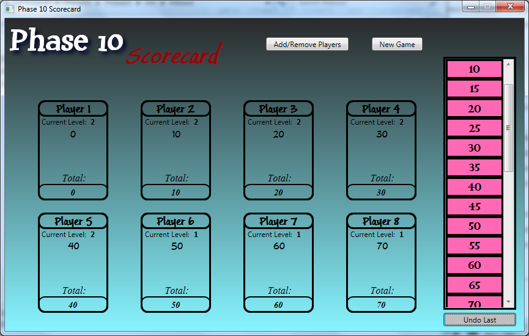

My Work
I have been programming with C# for the last two years, and am presenting a small coding sample from three of my favorite projects I have worked on to date. Sections of the code have been omitted for this sample, but full scripts will be made available upon request during an interview.
Phase 10 Scorecard

Description:
I originally created this application for my mother as a birthday present in the first half of 2014. Phase 10 is a card game where keeping score is the most laborious and unfavorable part of the game. Unhappy with available Phase 10 scorecards in iTunes, I decided to build an application that my mother could use on her Samsung tablet, and simplify the score keeping when we played Phase 10.
Benefits
- Scoring consists of simply dragging a value from a listbox, and dropping it on the player's score box. The totaling of the score is done in the background automatically, and displayed at the bottom of each player's score box.
- Keeping track of which player's complete a level can be laborious at times, so I programmed in the functionality to automatically track which level a player is on based on points. If a player has <= 45 points at the end of a round, that player's level tracker increases by one. If a player has >= 50 points at the end of a round, then they will remain on the same level as before. This greatly simplifies the process.
- If a mistake has been made while inputing the scores at the end of a round, this application has a button for that. The application tracks every score inputed, and will undo each input one by one until the mistake is corrected. Every score and level will be updated with every click of the undo button.